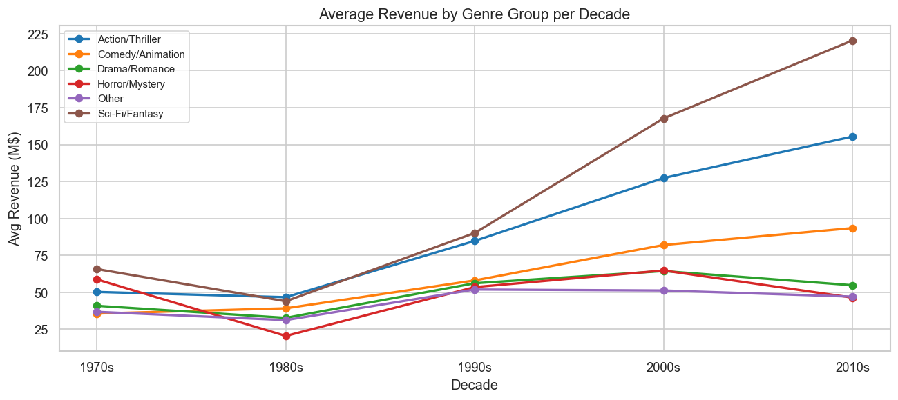
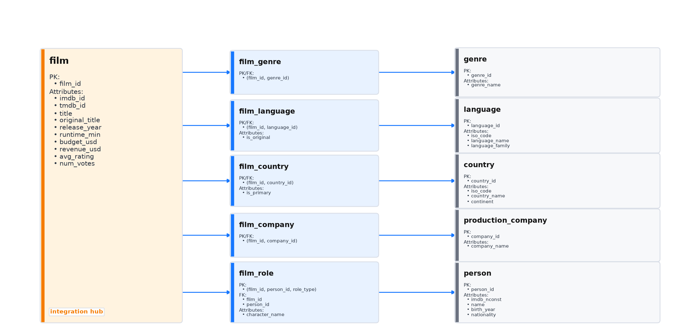
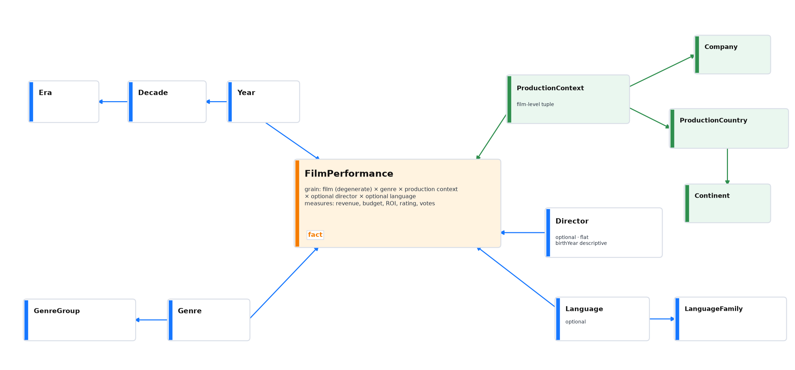
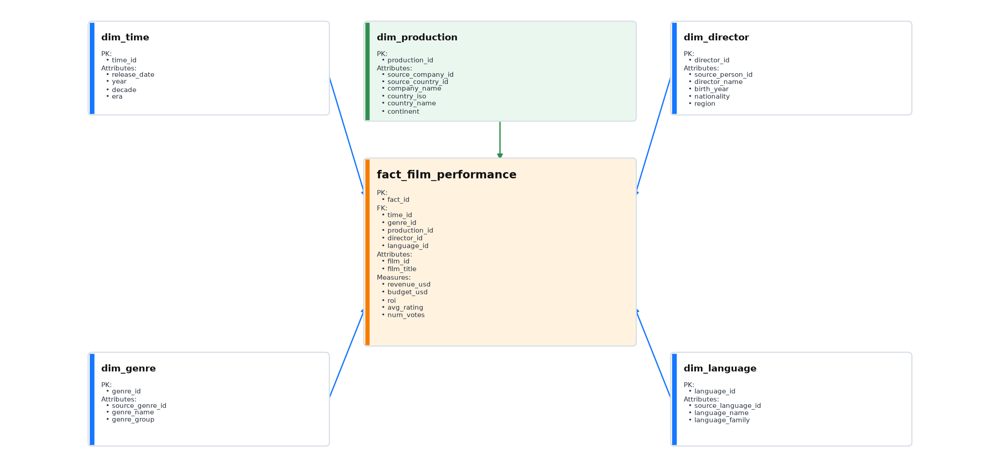
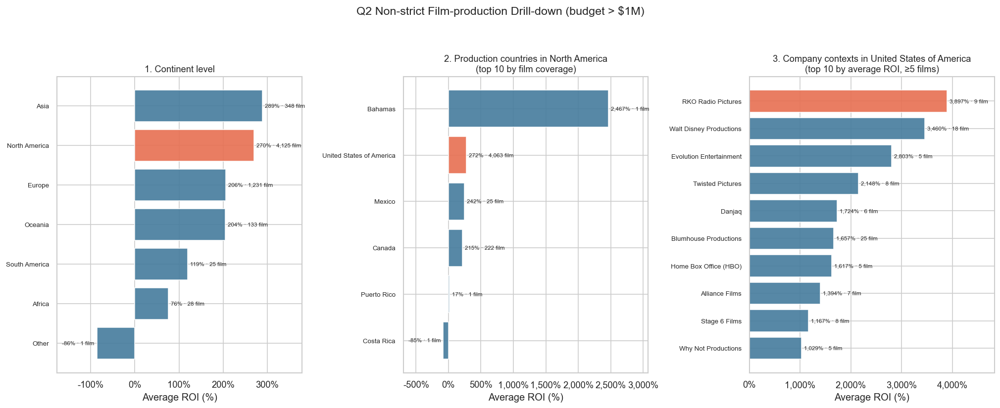
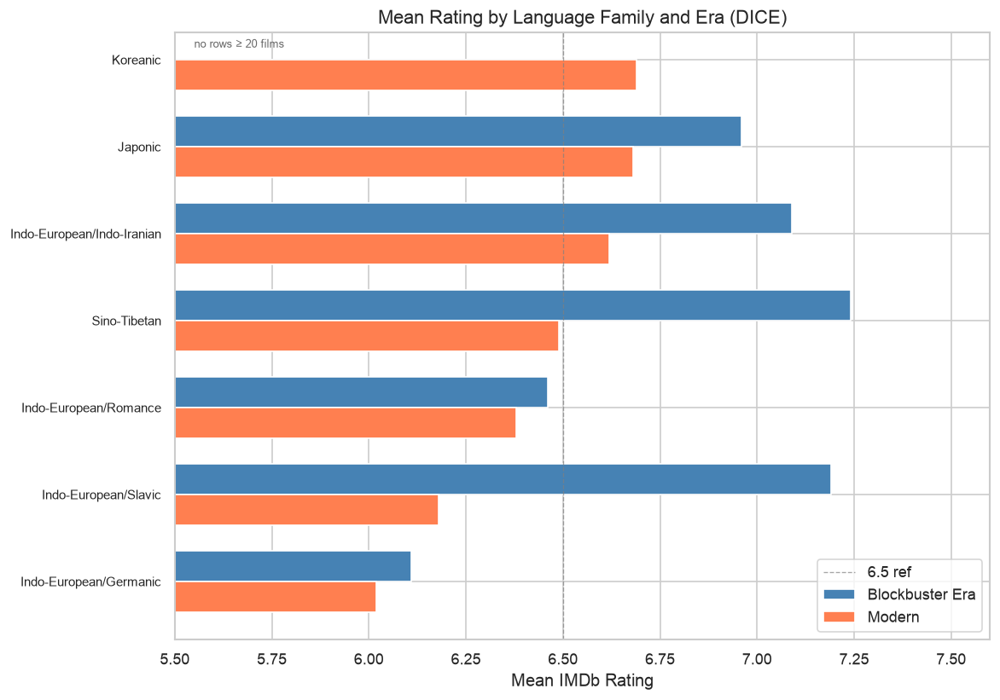
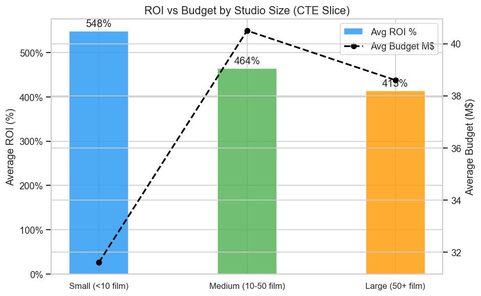
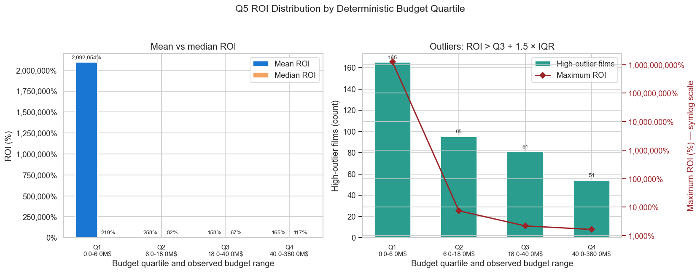
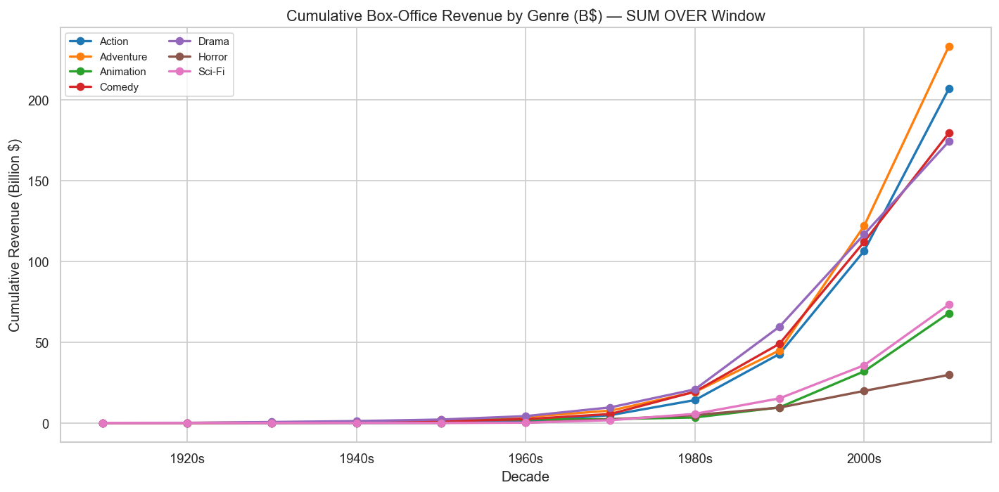
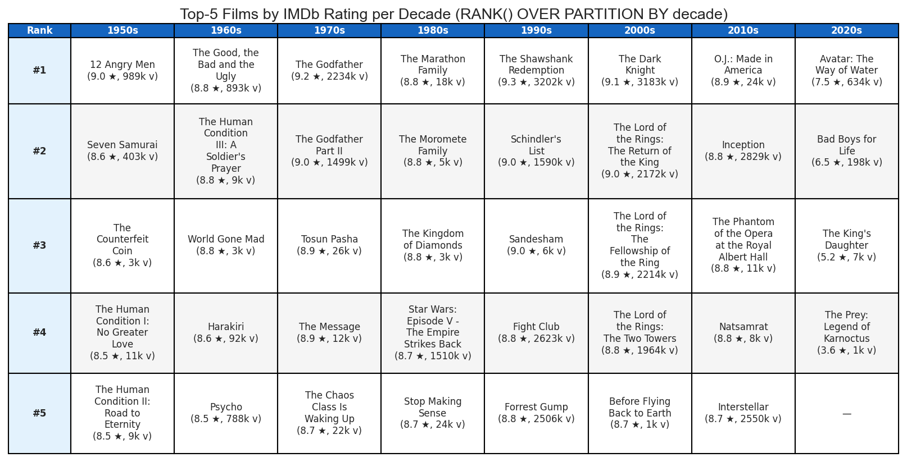

Davide De Blasio · Enrico Battistoni
Overview
A PostgreSQL data warehouse integrating IMDb and Kaggle movie data for dimensional analysis and OLAP queries.
Input datasets
Two movie datasets capture complementary aspects of the same domain; the first design decision is how to integrate them without losing source-specific meaning.
tconst key (e.g. tt0111161).Without reconciliation, ratings and financials could not be analyzed together.
Reconciled layer
39,096 films carry an accepted IMDb mapping — resolved via source ID first, with exact and fuzzy title matching as controlled fallbacks; every outcome is audited.
Canonicalize IMDb ID syntax and distinguish valid IDs from missing or invalid values.
Accept IDs found in eligible IMDb; quarantine valid source IDs that are unavailable.
Only without a valid ID, require a unique exact title-year match, then a unique same-year fuzzy best.
Record method, status and reason; never replace a valid unavailable ID heuristically.
| Outcome | Records |
|---|---|
| Accepted mappings | 39,096 |
| Quarantined | 6,327 |
| Unmatched | 10 |
Audit status governs cross-source identity, not film retention: the loader keeps 45,431 titled Kaggle films, while 39,096 carry an accepted IMDb mapping.
Layer 2 · Reconciled
A normalized hub integrates identity, financials, ratings and production roles while preserving source relationships before warehouse denormalization.
The film table stores the unified movie identity with IMDb and TMDB references when available.
M:N bridges preserve roles and production data; original language is recovered and Science Fiction becomes Sci-Fi.
DDL constraints and ETL checks reject invalid keys, role values and source mappings.
| Table | Rows | Role in the model |
|---|---|---|
| film | 45,431 | Cleaned Kaggle films, enriched where an IMDb mapping is accepted. |
| person | 183,082 | Only people referenced by relevant roles of loaded films. |
| film_role | 474,054 | Movie-person-role relationships. |
| film_genre | 100,068 | Movie-to-canonical-genre relationships. |
| film_language | 59,847 | Spoken and explicitly recovered original-language links. |
Reconciled layer
The separate ER view makes the normalized identity hub and its M:N relationship tables explicit.

film hub with IMDb + TMDB identifiers.
M:N bridges preserve genres, languages, countries, companies and roles.
Dimensional Fact Model
The DFM fixes the analytical grain before the physical star is built; that choice governs every OLAP aggregation.
Genre, ProductionContext and Director create fan-out. Director and original language are optional; original language is single and does not multiply rows.
Dimensional Fact Model
The conceptual model separates the fact, aggregation semantics and analysis coordinates before physical implementation.

ProductionContext branches independently to Company and ProductionCountry → Continent; it never asserts company domicile.
Layer 3 · Physical schema
Denormalized dimensions keep roll-up, drill-down, slice and dice paths readable around fact_film_performance.
Five denormalized dimensions around the fact.
↓
Short, readable OLAP join paths.
Year 1900–2030, at least one genre and one resolvable production company.
↓
33,418 / 45,431 films pass the filter (73.6%).
↓
73.6% fact coverage; 26.4% excluded only by ETL policy.
Production context may have no country; Director and Language FKs are nullable.
↓
Missing optional data never excludes an eligible film.
Physical schema
The physical warehouse places the film-performance fact at the center of five analytical dimensions.

Aggregation issue
| Example | Without deduplication | With deduplication |
|---|---|---|
| One film: Furious 7 | Its revenue is repeated in every genre × company-country × director row. | Collapse the repeated rows into one contribution at the target grain. |
| Genre–decade result: Action, 2010s | A direct SUM adds those repeated revenues, inflating the group total. | Keep one row per film, decade and genre group, then aggregate. |
Query workload
Four classical OLAP queries and three window-function analyses.
| Query | Operation | Analytical question |
|---|---|---|
| Classical OLAP operations | ||
| Q1 | Roll-up | Revenue by genre group and decade |
| Q2 | Drill-down + slice | ROI from continent to company context |
| Q3 | Dice | Ratings by era and language family |
| Q4 | Slice + CTE | ROI by studio size |
| Window-function queries | ||
| Q5 | NTILE + percentiles | ROI across budget quartiles |
| Q6 | SUM OVER | Cumulative revenue by genre |
| Q7 | RANK | Top-rated films by decade |
Exported charts
The first four plots connect roll-up, drill-down, dice and slice operations to the current canonical CSV exports.




Exported charts
The remaining plots show NTILE budget bands, independent cumulative SUM OVER series and RANK by decade.



Evaluation
Stable invariants protect the model; documented source limits define the boundary of interpretation.
Three takeaways
Join complementary sources through auditable IDs.
Define what one fact row represents before aggregation.
Aggregate movie-level measures only at the target analytical level.
Conclusion
The project demonstrates a complete analytical pipeline — two heterogeneous sources, a reconciled integration layer, a dimensional star schema, and seven OLAP queries over the current fact snapshot.
thank you